Nhân dịp Apple vừa công bố các dịch vụ về media như một bước chuyển mình từ một công ty phần cứng thành một công ty sản xuất nội dung, mình thấy đây là thời điểm không thể hợp lý hơn để bàn về giá của những chiếc điện thoại phân khúc cao cấp và vì sao người dùng bọn mình phải bỏ ra số tiền trên 20 triệu đồng để mua chúng. Không riêng gì những chiếc iPhone, đến cả Samsung với chiếc Galaxy S10 Plus hay mới chỉ cách đây một tuần, Huawei ra mắt chiếc P30 Pro với giá đặt trước cũng mặn không kém… 22tr990k.
Chiếc iPhone XS Max có giá lên đến $1400 ở thị trường Mỹ, ở Việt Nam, giá iPhone XS Max bản 512Gb phiên bản Mỹ (ký hiệu LL/A) có giá khoảng trên 28 triệu đồng.
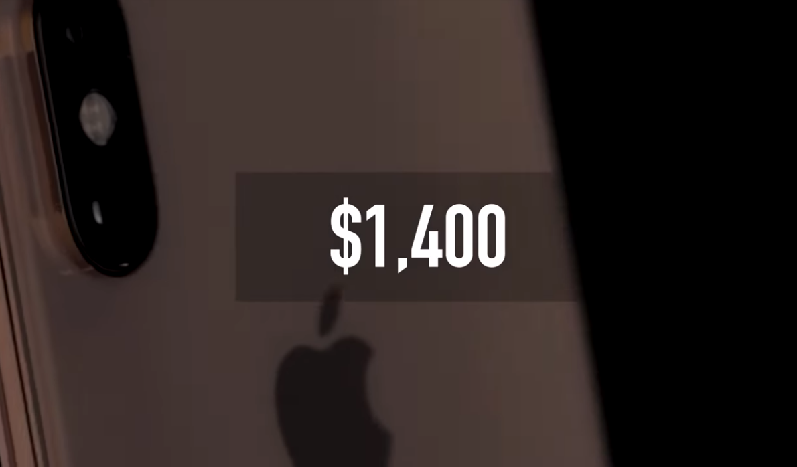
Trong khi đó chiếc Samsung Galaxy S10 Plus với cấu hình khủng nhất khi được trang bị bộ nhớ trong 1 Tyrabyte và dung lượng RAM lên đến 12GB cũng không thua kém chiếc iPhone đầu bảng với con giá lên đến $1600 ở trị thường Mỹ, khoảng 33,990,000 ở Việt Nam.
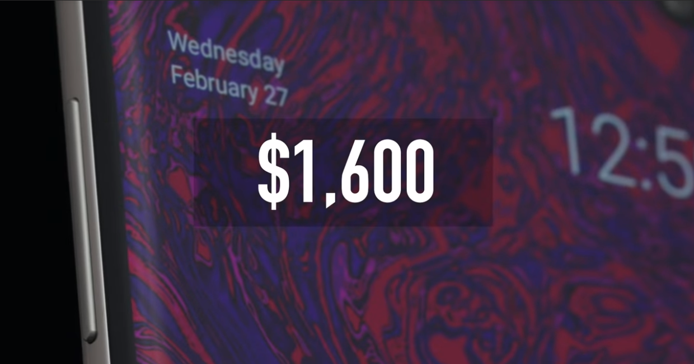
Và trong bài viết trước, mình có đề cập đến chiếc Samsung Galaxy Fold, có giá niêm yết tại Mỹ là $1980.
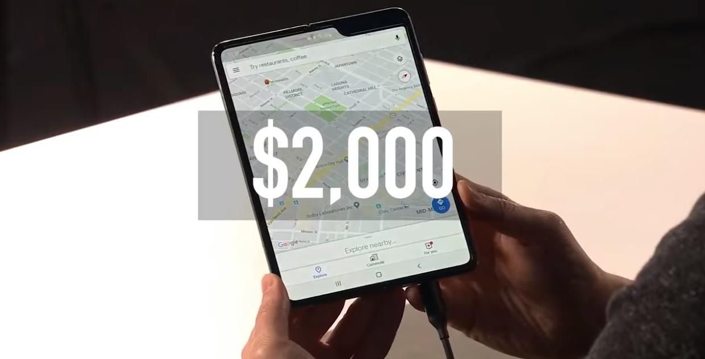
Thậm chí, gã khổng lồ điện tử Trung Quốc Huawei, còn mạnh dạn hơn trong việc niêm yết giá với con số khởi điểm cho chiếc Huawei Mate X là $2600 tại thị trường châu Âu (Huawei bị cấm bán điện thoại ở Mỹ - vụ này chắc mọi người có theo dõi báo đài thường xuyên thời gian gần đây chắc cũng đã nắm)
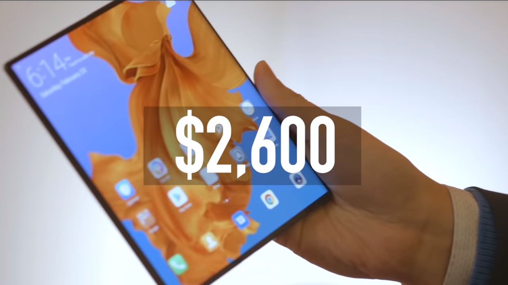
Giá điện thoại ở phân phúc cao cấp đã tăng theo đồ thị đường chéo trong những năm gần đây với những bước nhảy giá càng ngày càng nhanh. Các nhà sản xuất lớn như Apple, Google, Samsung và các hãng khác đã và đang móc hầu bao của người tiêu dùng hàn trăm Mỹ kim cộng thêm cho những chiếc điện thoại đầu bảng của mình so với một vài năm trước đây.
Và dĩ nhiên những con số trên sẽ không dừng lại ở đó. Nếu bạn đang cố gắng để dành để tự thưởng cho bản thân một chiếc điện thoại đầu bảng của năm vào những năm tiếp theo, điều này có thể sẽ khiến bạn chùn bước.
Vì sao những chiếc điện thoại đơn thuần chỉ để phục việc liên lạc, nghe gọi, nhắn tin, giải trí nhẹ nhàng lại tăng giá một cách đột ngột như vậy? Có một cơ số những lý do khác nhau khiến cho quãng giá ngày càng tăng. Lý do tốt cũng có, không tốt cũng có, nhưng trong bài viết này của Harold Talks Tech, mình sẽ nêu ra ‘3‘ lý do chính và thảo luận cùng các bạn. Nhưng trước hết, để hiểu rõ hơn, chúng ta sẽ cùng ngồi lại và ngắm nhìn bức tranh toàn cảnh của thị trường điện thoại cao cấp một chút.
The Big Picture - Bức Tranh Toàn Cảnh
Giá điện thoại đang tăng lên không ngừng ở hầu hết những công ty đang sản xuất và cho ra đời những chiếc điện thoại đầu bảng.
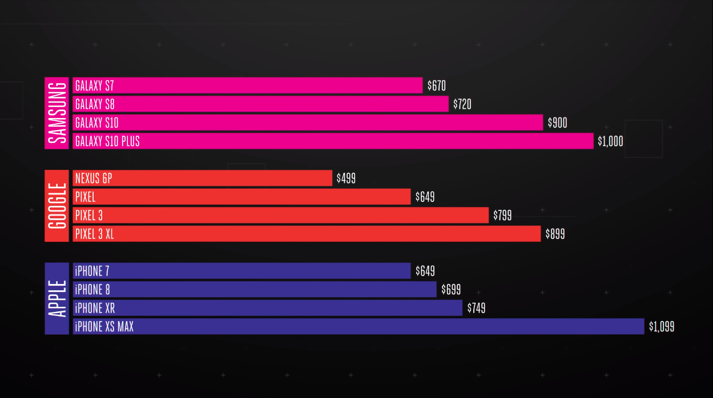
Tuy nhiên, mình sẽ chọn thương hiệu mà các fans Việt luôn ưu ái nhất thể hiện qua độ phủ sóng về mặt hình ảnh của những chiếc điện thoại của họ ở Việt Nam. À vâng, không phải cái tên nào xa lạ, đó chính là Apple. Nhưng mình sẽ không nói về giá Apple ở Việt Nam vì thật sự là giá của những chiếc iPhone ở Việt Nam có hơi chênh lệch với mặt bằng chung của các nước xung quanh một chút nen mình sẽ chọn nơi cha sanh mẹ đẻ của iPhone để thảo luận nhé. Một phần vì giá iPhone ở đây khá là bình ổn qua năm tháng, và thêm một lý do nữa là người Mỹ cũng ưu tiên sử dụng sản phẩm quốc gia nên iPhone khá là thịnh hành ở xứ sở cờ hoa.
Cái Chết Của Điện Thoại Hợp Đồng
Vấn đề đầu tiên mình muốn nêu ra ở đây, đó là giá điện thoại nói chung từng là một lời nói dối không hơn không kém.
Bạn có nhớ từng ngồi thức xem những buổi ra mắt những chiếc iPhone mới được giới thiệu bởi Steve quá cố hay Tim “Apple” bây giờ không? Và những chiếc iPhone đó được quảng cáo với giá $200?
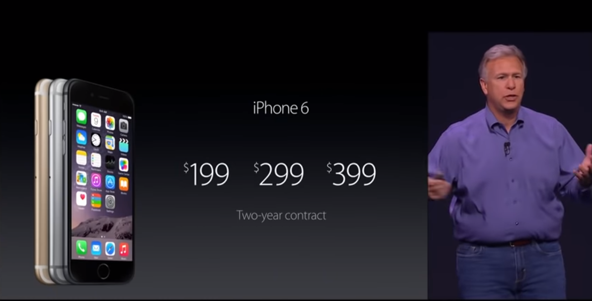
Nhưng thực tế những chiếc iPhone đó tiêu tốn hầu bao của bạn nhiều hơn bạn tưởng, có thể rơi vào khoảng $650. Giá thực tế của nó đã được Apple giấu đi so với thực tế mà bạn phải phải. Đây chính là cách mà thị trường bán lẻ điện thoại ở Hoa Kỳ vận hành vào thời điểm đó cho đến tận những năm sau. Và cứ như thế, chuyện này có vẻ sẽ không bao giờ có hồi kết. Chỉ đến khi, CEO nối tiếng bốc đồng và huyên thuyên của T-Mobile John Legere - một trong những nhà mạng lớn nhất ở Hoa Kỳ - đăng đàn với một trashtalk (thuật ngữ thường dùng trong thể thao chuyên nghiệp khi hai đấu thủ truyền kiếp sẽ đăng đàn và nói khích nhau trước khi thi đấu để lên dây cót tinh thần), mọi chuyện có vẻ bắt đầu thay đổi từ đây.
Khi Legere lên nắm giữ cương vị CEO của T-Mobile vào năm 2012, công ty này đang lâm vào tình trạng không khả quan một chút nào. Khoảng cách giữa nhà mạng này với hai nhà mạng lớn còn lại ở Hoa Kỳ là Verizon và AT&T là tương đối xa. T-Mobile còn kém xa Sprint với 20 triệu thuê bao ít hơn. Legere muốn làm một điều gì đó để T-Mobile trở lại cuộc đua thu hút sự quan tâm của khách hàng tại xứ sở cờ hoa. Và chỉ 6 tháng sau khi nhậm chức tại T-Mobile, ông này đã làm một điều mà trước giờ chưa ai nghĩ đến với một nhà mạng lớn ở Mỹ: đó là cho “khai tử“ hình thức điện thoại hợp đồng hai năm. Chuyện này có vẻ rất buồn cười vào thời điểm đó và ông này đã nhận khá nhiều lời chỉ trích cũng như chế nhạo từ giới truyền thông cũng như người dùng. Nhưng ý tưởng chính là nguyên nhân làm thay đổi cuộc chơi “game-changing idea“. Ý tưởng này phần nào mang đến sự thân thiện hơn cho người tiêu dùng, và song song đó, điều này cũng khiến cho việc giảm giá dịch vụ của họ dễ dàng hơn. Và hệ quả của chiến lược này đó là giá thuê bao của T-Mobile có thể giảm xuống mức chỉ bằng một nửa so với giá của AT&T hay Verizon. Cú hích này đã làm thay đổi tình hình kinh doanh ảm đạm của công ty này trước đó với việc liên tiếp đạt được cán mốc tăng trưởng ấn tưởng từ nửa cuối 2013 đến năm 2014 và đưa họ quay trở lại top 3 nhà mạng lớn nhất tại Hoa Kỳ.

Nhưng giảm giá dịch vụ cộng với việc khai tử điện thoại hợp đồng, đồng nghĩa với việc từ bỏ trợ giá thiết bị mà các nhà sản xuất phần cứng ký kết với nhà mạng. Các nhà mạng có thể bán cho bạn một chiếc iPhone với giá $200, bởi vì họ âm thầm móc hầu bao của bạn hàng tháng trong suốt quãng thời gian 2 năm mà bạn ký kết hợp đồng với họ. Chiếc iPhone bạn mua thời điểm đó vẫn luôn là một chiếc iPhone giá $650. Bạn chỉ không nhìn thấy nó từ ngày đầu tiên bạn mua thôi. Trong vòng 2 năm, Verizon, AT&T và cả Sprint đều nối gót T-Mobile để thực hiện thay đổi này. Và giờ giá niêm yết mà bạn nhìn thấy chính là cái giá bạn phải trả cho chiếc điện thoại đi kèm với giá thuê bao mà bạn phải trả hàng tháng tùy theo gói cước mà bạn lựa chọn. Đó là yếu tố đầu tiên mà mình nói đến ở đây trong ba phần của câu chuyện vì sao giá của những chiếc điện thoại thông minh ngày càng tăng. Điều này đã làm thay đổi giá của những chiếc iPhone từ mức $200 lên mức $650 chỉ trong vài năm.
Như mình đã nói ở trên, câu chuyện của những chiếc điện thoại flagships với giá tầm 20 triệu ở Việt Nam hay ở Hoa Kỳ không còn là một điều quá xa lạ chỉ vì việc “khai tử“ điện thoại hợp đồng. Điện thoại thông minh phân khúc cao cấp thực sự đã đắt hơn tương đối trong vòng 4-5 năm trở lại đây. Một bước nhảy lớn từ mức giá $600 cho một chiếc flagship lên mức $1000 như hiện nay. Mức tăng giá theo kiểu bước nhày như thế này không đi kèm với những gì mà người tiêu dùng muốn, mà còn đến từ những công ty như Apple muốn.
Quá Nhiều Điện Thoại Trên Thị Trường
Điều này dẫn đến phần thứ hai của câu chuyện bức tranh giá cao của những chiếc điện thoại. Nghe thật kỳ lạ nhưng Apple - công ty công nghệ hàng đầu thế giới từng đạt giá trị nghìn tỷ Mỹ Kim, đang dần khai thác hết nguồn tài nguyên người dùng có thể mua sản phẩm bán chạy nhất mọi thời đại của họ, chiếc iPhone.
“The smartphone market, as you know, is currently not growing.“
Tim Cook - Apple CEO năm 2016
Thời điểm những chiếc iPhone 4S ra mắt, cứ mỗi 3 người Mỹ thì có 1 người sử dụng smartphone. Con số này sau 5 năm tăng lên thành 03 cho mỗi 4 người Mỹ. Cái chết của những chiếc điện thoại hợp đồng phần nào cũng khiến cho doanh số bán smartphone bị ảnh hưởng ít nhiều, giờ đây việc bán smartphone không còn dễ dàng như trước, ngay cả khi đó là Apple. Mẫu số chung khách hàng không còn tìm thấy lý do chính đáng nào hợp lý để mua một chiếc điện thoại mới sau mỗi hai năm, tức là Apple khó lòng đảm bảo doanh số mỗi 02 năm mà họ có được tại thời điểm mà người dùng sẽ có khuynh hướng đổi điện thoại khi hợp đồng của họ với nhà mạng chấm dứt. Thật vậy, các nhà mạng còn không ngừng kéo dài thời gian gia hạn hợp đồng cho những chiếc điện thoại mà họ đã bán cho khách hàng. Đơn cử như AT&T đã cho phép khách hàng của họ chia nhỏ cái giá phải trả cho chiếc điện thoại họ mua lên thành 02 năm 06 tháng. T-Mobile còn chơi lớn hơn với 03 năm. Tất cả những điều này tựu chung lại tạo ra một thay đổi cực lớn cho thói quen mua sắm điện thoại ở Bắc Mỹ. Tại thời điểm năm 2017, người Mỹ kéo dài thời gian thay đổi điện thoại trung bình lên đến hơn 2,5 năm. Nghe có vẻ không nhiều, nhưng nếu nhìn lại con số này một năm trước đó, thời gian trung bình là chưa đến 02 năm. Để có thể hiểu rõ hơn câu chuyện này, các bạn có thể nhìn biểu đồ ngay phía dưới đây
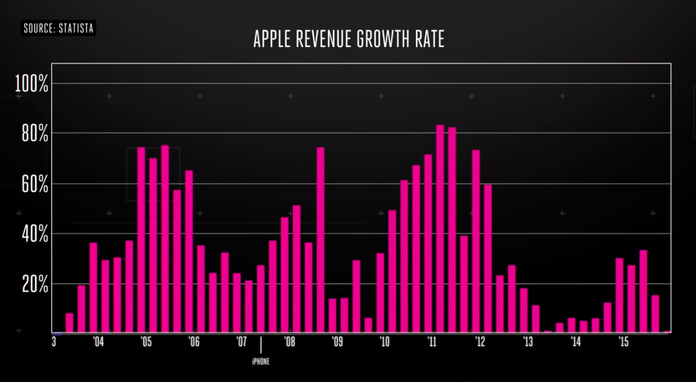
Nhờ vào việc kinh doanh ấn tượng của thiết bị nghe nhạc bỏ túi iPod, Apple đã liên tiếp xác lập các kỷ lục về doanh số trong các quý liền kề. Và khi những chiếc iPhone xuất xưởng và đến tay người dùng, con số này phi mã và tăng tốc nhanh hơn. Apple đã và đang trên đà tăng trưởng trong 13 quý liên tiếp, và rồi điều gì đến cũng đã đến. Tại thời điểm tháng 04 năm 2016, Apple lần đầu tiên trượt mục tiêu kinh doanh quý.
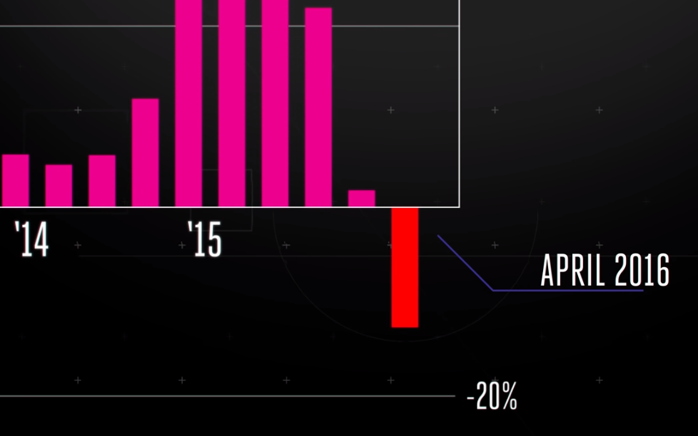
Lần đầu tiên sau hơn một thập kỷ, Apple thu về ít “xiền“ so với cùng quý cùng kỳ trong năm trước đó. OK, mình cũng muốn xác nhận lại với các bạn là Apple vẫn thu về hàng núi đô la doanh thu(có thể lấy quỹ tiền mặt hiện có đè chết Vinfast luôn nha mí bạng, đùa chút thôi): chắc khoảng đâu đó có $50 tỷ doanh thu trong 1 quý thôi à. Dù các bạn đã biết hoặc chưa biết, Apple sống hay chết phụ thuộc rất lớn vào doanh số của đứa con cưng iPhone. Tại thời điểm mà Apple kinh doanh tốt nhất, những chiếc iPhone đóng vai trò cực lớn trong việc mang về nguồn doanh thu khổng lồ giúp tạo nên tên tuổi của họ như hiện nay. Những chiếc iPHone chiếm tỉ trọng 65% trong tổng doanh thu mà Apple có được trong toàn bộ các mảng kinh doanh của họ. Và để giữ cho chiếc thuyền đó đi không chệch hướng dành cho đứa con cưng của mình, Apple sẽ phải lèo lái con thuyền kinh doanh vào việc tập trung những gì tốt nhất cho đứa con yêu của mình. Và điều đó có 2 ý nghĩa cơ bản sau:
Một là bán được thật nhiều iPhone, hoặc hai là bán được thật nhiều những chiếc iPhone đắt tiền.
Và các bạn đều đã biết được điều mà Apple đã làm trong khoảng 04 năm gần đây. Đầu tiên, người dùng có thể mua những chiếc điện thoại với giá dễ thở hơn với hợp đồng hai năm. Rồi sau đó, điện thoại hợp đồng bị khai tử. Mọi người mua ít điện thoại hơn đồng nghĩa với việc giá điện thoải buộc phải tăng để bù cho số lượng bán ra. Nghe có vẻ hơi “con buôn“ đúng không mấy bạn? Nhưng mà có vài điều mình muốn làm rõ hơn ở đây.
Điện thoại cao cấp ngay một cao cấp hơn
Và điều này dẫn đến phần thứ ba của câu chuyện.
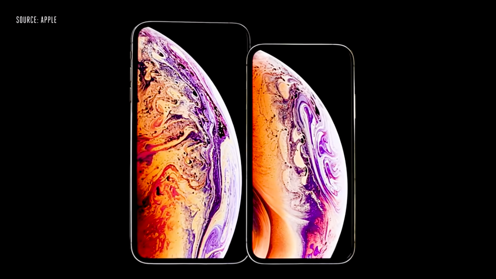
“Đây là những iPhone cao cấp và tân tiến nhất mà Apple từng tạo nên“
Dẫn lời Tim Cook - Apple CEO trong sự kiện ra mắt thế hệ iPhone thứ 11 của họ tháng 9 năm 2018
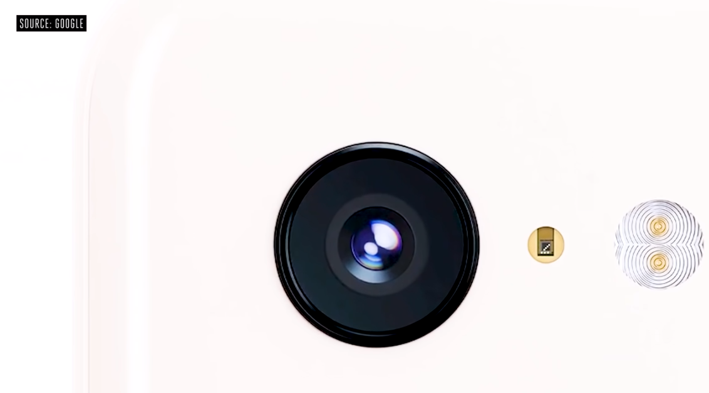
“Chúng tôi đã thiết kế thành công chiếc camera tốt nhất đặt nó trong một chiếc điện thoại có công năng tốt nhất từ trước đến nay“
Trích lời một lãnh đạo của Google trong lễ ra mắt chiếc Google Pixel 3 và Pixel 3 XL tháng 10 năm 2018

“Galaxy Fold là thiết bị không giống với bất kỳ những chiếc điện thoại nào đã ra mắt trước đó“
Dẫn lời Justin Deninson - Phó chủ tịch phụ trách Chiến lược Sản phẩm và Tiếp thị của Samsung Electronics Bắc Mỹ tháng 2 năm 2019
Các bạn phải đồng ý với mình là những chiếc điện thoại cao cấp tại thời điểm này thật sự có nhiều tính năng “rất gì và này nọ“ và ngày một hoàn thiện hơn về ngoại hình đúng không nào? Như mình đã đề cập trong bài viết trước về tính hữu dụng cũng như vẻ đẹp thiết kế của những chiếc điện thoại màn hình gập (các bạn có thể đọc lại tại Đây) đổi lại với cái giá mà bạn phải bỏ ra là khá hấp dẫn. Các bạn sẽ có những chiếc điện thoại có màn hình với công nghệ đẹp hơn, tỉ lệ diện tích hiện thị so với khung kim loại cũng ngày một tăng lên, đi kèm với hệ thống camera ngày một tiệm cận những chiếc máy chụp ảnh cao cấp, RAM và bộ nhớ siêu khủng, chống nước, chống bụi tiêu chuẩn cao, tất cả những tính năng cao cấp đó được gói gém trong một thân hình sexy với kính cường lực và hợp kim cao cấp.
Nếu các bạn chịu khó Google Search một chút về giá thành các linh kiện để tạo nên một chiếc iPhone 4S thời điểm năm 2010, tổng giá trị là
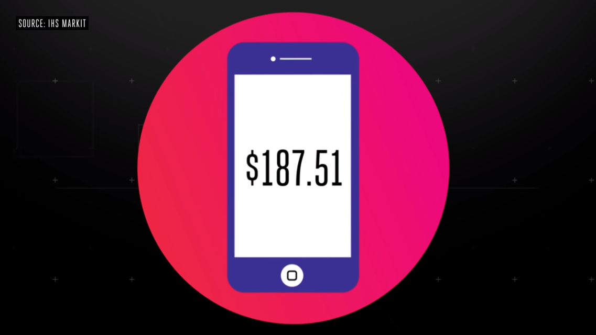
Nhưng khi so sánh với chiếc iPhone XS Max của năm ngoài, tổng giá trị của tất cả các linh kiện là
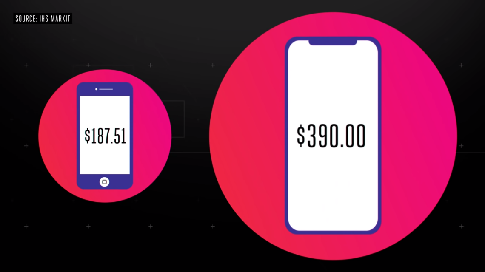
Đúng là những con số mình nêu trên thấp hơn nhiều so với giá bán ra của những chiếc iPhone tại thời điểm mà chúng ra mắt, nhưng đó chỉ là giá thành của toàn bộ các linh kiện cấu thành nên chiếc iPhone. Chi phí trên chưa bao gồm R&D(nghiên cứu và phát triển sản phẩm), sản xuất, chuỗi cung ứng, các dịch vụ hỗ trợ, giá phải trả cho nhân công tham gia vào toàn bộ quá trình từ thiết kế, chế tạo, lắp ráp đến khâu bán ra sản phẩm ngoài thị trường của Apple và còn nhiều hơn những chi phí khác… Giá của những chiếc iPhone thực tế không tăng quá nhiều như bạn nghĩ.
Apple thu của bạn $650 cho chiếc iPhone đầu bảng của họ vào năm 2011
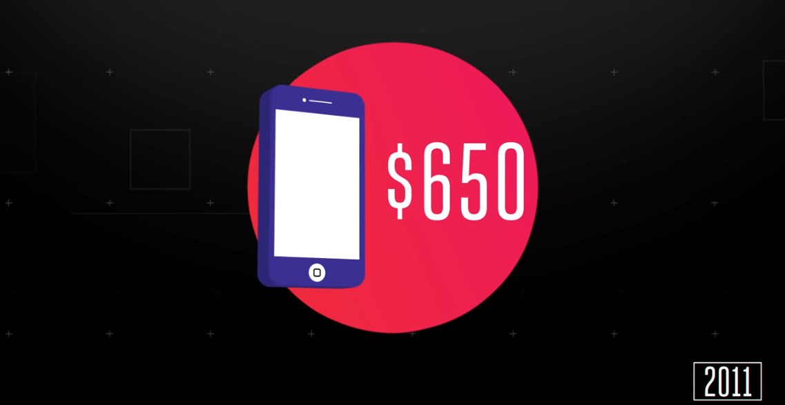
Nếu tính thêm cả chênh lệch về lạm phát hàng năm theo một tỉ lệ xác định, con số này tính đến năm 2019 sẽ là $720
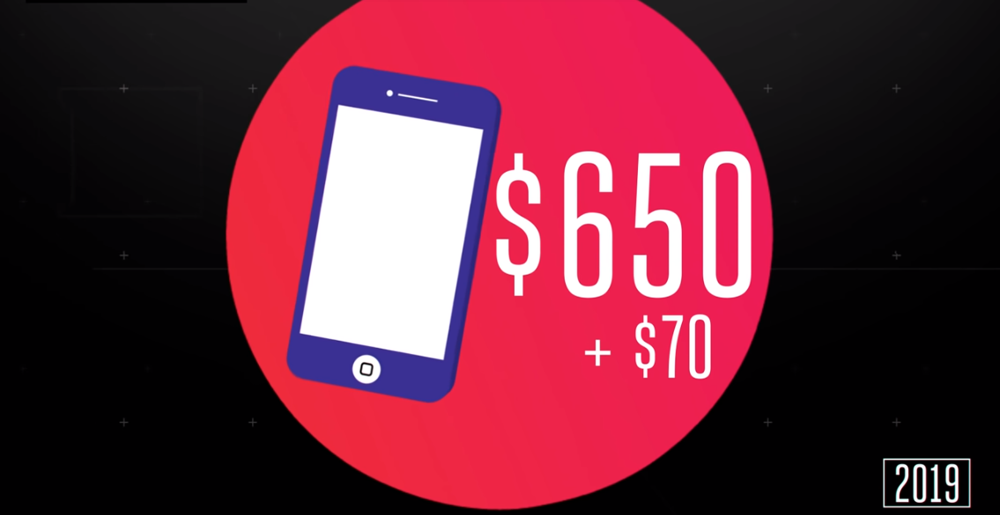
Và với giá trị là $720, nó vẫn thấp hơn so với giá $750 cho một chiếc iPhone XR, khi mà giá thành của linh kiện cũng như các chi phí khác sản xuất nên chiếc XR chắc chắn là cao hơn so với thời điểm làm ra chiếc iPhone 4S.
Vậy là trên thực tế, không phải là giá thành để tạo nên một chiếc iPhone trở nên đắt đỏ hơn, mà chủ yếu là do Apple đã đẩy giới hạn và định nghĩa về một chiếc iPhone cao cấp sẽ được định giá như thế nào. Công bằng mà nói, khi bạn rút hầu bao của mình để sắm một chiếc iPhone có giá $1000++, điều đó có nghĩa là bạn đang nằm ở nhóm số ít người có đủ khả năng để mua một chiếc điện thoại đắt tiền so với phần còn lại của những người tiêu dùng khác.
Ở Hoa Kỳ hiện nay, mức giá trung bình bỏ ra cho một chiếc smartphone là $400, và thậm chí còn thấp hơn nếu tính trên mặt bằng chung của thế giới (dao động từ $200-$250).
Bạn có thể bỏ ra số tiền hơn $1000 để trang bị chiếc điện thoại tốt nhất thế giới tại thời điểm nó ra mắt, nhưng xét trên bình diện chung, điện thoại thông minh hiện nay đã tốt hơn trước rất nhiều rồi. Đơn cử như chiếc Oppo F11 Pro hay Samsung Galaxy A50 vừa ra mắt hồi trung tuần tháng 03 vừa rồi tại Việt Nam đã trang bị những công nghệ mà cách 05 năm không ai nghĩ đến có thể được trang bị trên nhưng thiết bị tầm trung. Hai chiếc điện thoại trên gần như đáp ứng nhu cầu của một người dùng phổ thông với camera đẹp, thời lượng pin ấn tượng, màn hình xuất sắc trong tầm giá cùng với những công nghệ hàng đầu hiện này (với Oppo là camera selfie thò thụt hay Samsung là vần tay ẩn trong màn hình). Ngay cả Apple cũng không quên chen chân vào mảng thị trường thiết bị trung-cao với chiếc iPhone 7 mới nguyên seal (hiện vẫn còn sản xuất) với giá $450 tại thị trường Bắc Mỹ.
Một lần nữa, mình xin khẳng định lại là giá điện thoại cao cấp đã tăng lên đáng kể trong những năm qua. Bạn phải bỏ ra số tiền nhiều hơn để trang bị cho mình chiếc điện thoại đầu bảng với những tính năng hàng đầu mà so với thời gian trước đây, bạn chỉ phải bỏ ra số tiền ít hơn. Nhưng sự khác biệt quan trọng ở đây là, bạn có thể bỏ ra số tiền thấp hơn đáng kể nhưng vẫn có thể mua cho mình một thiết bị đáp ứng đầy đủ nhu cầu của một người dùng bình thường. Và chiếc điện thoại mà bạn quyết định mua ngày hôm nay có thể trụ lại với bạn lâu hơn so với những thiết bị bạn mua 3 hay 4 năm trước đó.
Và khi bạn đã đồng ý bỏ ra một khoản tiền lớn (lấy ví dụ là chiếc Apple iPhone X của năm 2017), bạn sẽ không phải bỏ ra thêm một số tiền lớn như vậy ít nhất là trong vòng 2 năm tiếp theo, vì thực tế là chiếc IPhone X sau 2 năm vẫn là một chiếc điện thoại thực sự tốt và ổn định để sử dụng đến năm 2020 (nếu bạn đi thay pin sau 2 năm để không bị Apple chơi chiêu giảm hiệu năng làm giật lag, ahihihi).
Cảm ơn các bạn đã dành thời gian đọc bài viết của mình, nhớ bookmark trang của mình để cập nhật những bài viết sắp tới về thế giới khoa học và công nghệ thay đổi không ngừng.
P/S: Mình đang mày mò cái ông thần Node.js này để thêm vào tính năng Email subscription để khi có bài viết mới ra sẽ notify những bạn đã subscribed blog của mình. Thật ra cái này trên Wordpress chỉ cần gắn cái plug-in dễ như bỡn nhưng do mình chọn con đường khó hơn là tự build lên từ một framework của NodeJS nên phải mò lâu lâu hơn một chút.